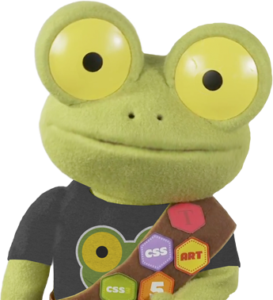
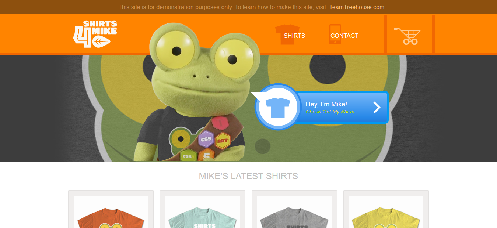
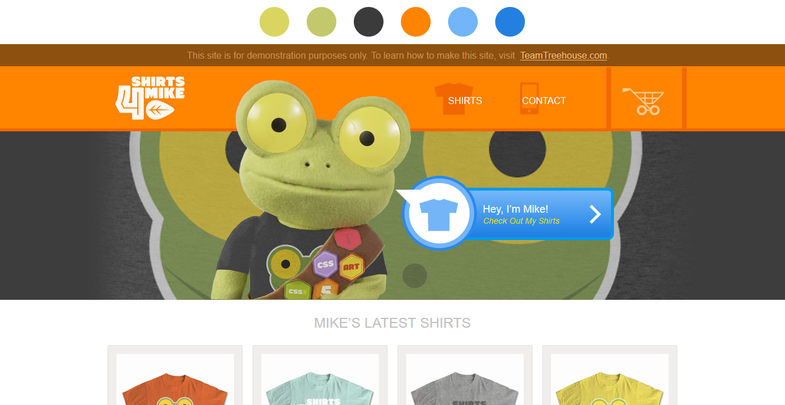
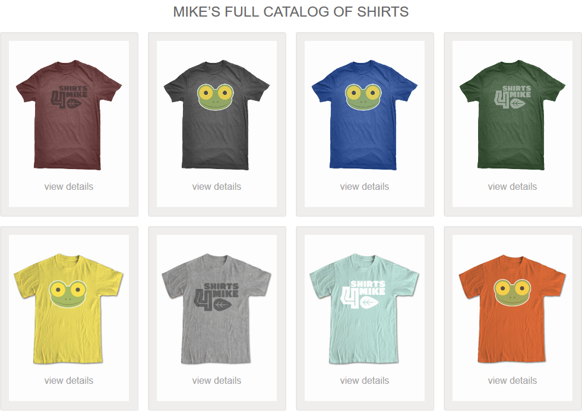
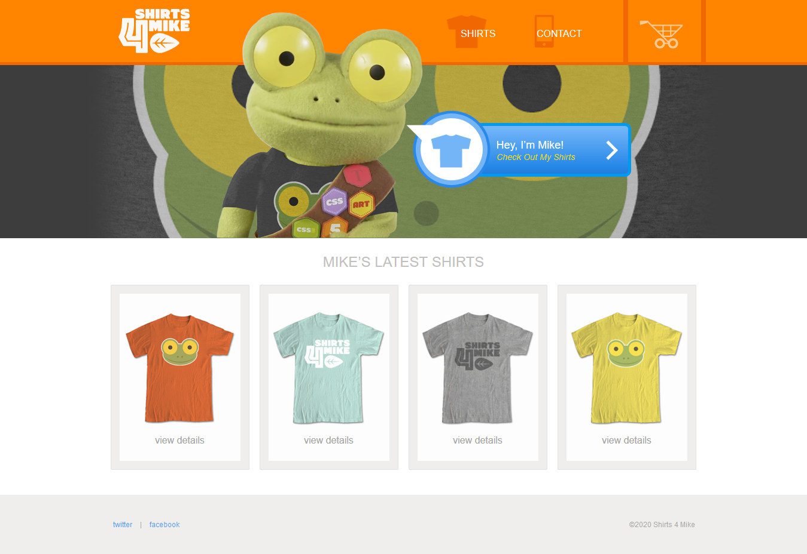
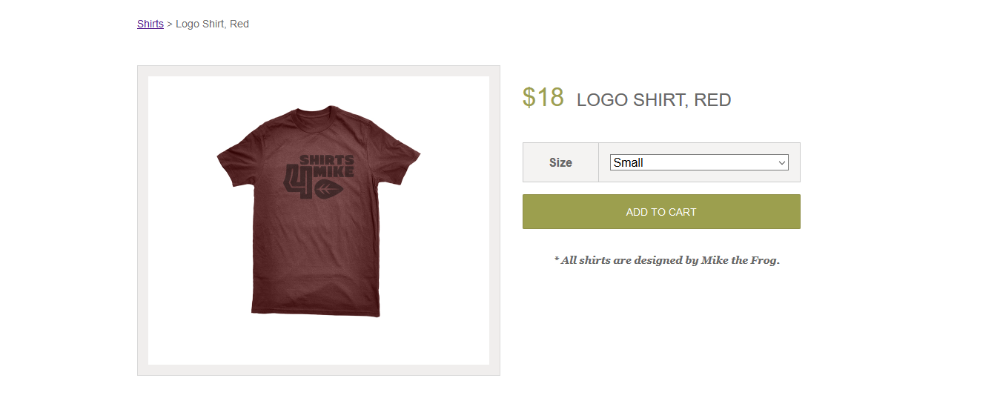

Critique of a T-shirt Website
One of my first design projects, I was given the task to Make a Critique of the Shirts4Mike store, a PHP written E-Commerce website. I was asked about color, shapes, Groupings, Balance and Organization, to which I gave my opinion about certain mistakes the site has BUT it still manages to be effective at its main objective.
I learned a lot about this project, not only how to critique a design work, but about critiquing my own design, it gave me valuable insights about design principles and the confidence of giving my own opinion. I’m grateful for making this project.

Project's Problem
My objective in this project was writing a critique of the e-commerce website Shirts4Mike, a demonstration website for the students of Treehouse on how to use php. The website has a mascot, Mike, who is a frog, and apparently designed all the T-shirts.
Project's Audience
The users of this website are Treehouse students, in particular, Web Development and UX Design students. They would be people with jobs that want to have a "tech update" to get a better position, a new career or out of pure interest, therefore they would be somewhere between 25 and 40 years old.
My Process
I analyzed the website, pressed all the buttons, read some text and interacted with everything to understand all the functions.

My first step in my critique was individuating the objective of this website. Defining an objective is fundamental in any project since it allows designers to have an "anchor point" of all their decisions. For example, making huge text may seem like a bad idea, but maybe the objective of the project is helping elder audiences read better. It all depends on the objective and context, in this case, I defined this goal:
"The goal is to show programming Treehouse students how a PHP website is made and to help UX Design students make their first project critique. It would demonstrate a mock-up of a selling T-shirt website."
Then, with the same purpose, I individuated the target, which you can read above. I defined the possible user personas using an empathy map. Met Artsy Jane!
Name of the user: Artsy Jane
Image by nastya_gepp
What the user says:
- That's a cute puppet (Mike).
- This site is very understandable and easy to use.
- The site is well organized and it's easy to find everything
What the user thinks:
- Who's Mike?
- Ok, Treehouse told me to check out this website, let's see
- What happens if I click here?
- If this is a demonstration website, what happens if you actually buy a T-shirt?
- There aren't any reviews?
- These are all the T-shirts?
- Who designed the T-shirts? Or the website?
- Wonder if I could design T-shirts
What the user does:
- Clicks on everything to test the functionality
- Checks the T-shirts and the prices
- Clicks on the cart button for curiosity
- Tests the design and usability of the webpage by using it like a normal user would.
- Studies at Treehouse to stay up to date.
What the user feels:
- Curious - she's supposed to check out the website, so she wants to see what every button does.
- Rushed - she has a full-time job and studies at Treehouse, so she has to make every second count.
- Affective - she thinks that Mike it's cute and makes her feel better.
Summary - Who is this user?
Jane House is a 29-year-old American that works in a design studio and wants to update her curriculum with the latest design trends and technologies. She studies at Treehouse and works a full-time job so she is busy and has to save as much time as possible when studying; still, she enjoys what she does and is really motivated to keep moving forward. She is given the task to see the site to understand how a website can be designed and written in PHP.
With a clear direction defined, I began analyzing the website based on design principles:
- Colors: The prominent color is orange because of the banner, and the brightness of it makes it stand out from the rest but it is also contrasted with the 'Hey, I'm Mike' blue button, so it's really inviting to click the button, there's also green in Mike's model and on the background. There's a contrast between the high-intensity orange banner and the opaqueness of the gray-black 'This site is for demonstration purposes only' making a good job at directing the eye towards it to inform its users. Although the big quantity of color on the upper side of the land page feels disproportionate from the whites and grays of the lower side.

- Shapes: The site is mainly designed upon rectangles to separate and organize sections, and Mike's model breaking into these rectangles gives it an organic and playful essence, there's also the 'Hey I'm Mike' button which has a rectangle and a circle, making some emphasis as well. Mike's silhouette stands out over the other shapes and its form and textures evoke tactfulness emotions and playfulness because of the material. Again, the big quantity of shapes and textures on the upper side of the landing page feels disproportionate in comparison to the lower side, which has much simpler shapes.
- Groupings: As mentioned above, the sections of the website are separated through rectangles, there's the orange banner, the 'Mike banner', Mike's latest t-shirts and social networks at the end. This separation and contrast of colors and textures make it very clear to distinguish between each part of the page. Mike's shape attracts attention for its irregular outline and the way it breaks into the rectangles. The 'This site is for demonstration purposes only.' goes along with the user's scrolling, making stand out over the rest to make a good indication of the website's purpose at all times.

- Balance and Organization: Each section of the page is clearly defined, making it easy to read, although, the upper part of the website is heavily balanced in comparison to the lower part: the upper part has many different shapes, colors, and textures, while the lower part it's more simple with soft white and gray colors (and the colors of the T-shirts).
There's isn't a good use of negative space on the upper part of the website, it gives a sensation of being all crammed together while the lower part has a good use separating each T-shirt, having a margin on both sides and having good space between these T-shirts and the contacts section.

With the design principles defined, we can individuate the strengths and weaknesses of the website:
Strengths:
- The site is very clear and organized for a simple read and it's easy to understand that they are a mock-up website selling t-shirts.
- Mike's model gives life to the website with its different textures, forms, and shapes.
- It's a good example for Treehouse students, it's got different sections that work well together.
Weaknesses
- The upper part of the landing page has too many elements compared to the lower part, repositioning objects could help, or adding more color and other design elements to the lower part, or maybe adding negative space in the upper part.
- It would be more useful to have the prices directly on the T-shirt catalog instead of having to click individually on each T-shirt.
- When clicking a T-shirt there isn't any useful information shown other than the size and the prize of the T-shirt. It would be helpful having more info like the fabric and materials, exact dimensions and reviews of people.

Finally, I wrote a summary of the whole website, always keeping in mind the objective:
The site could be better, it's got little details that can be worked on. Specifically, the upper part of the landing page has many elements so it feels a bit crammed together in comparison to the lower part, maybe adding and or removing negative space, colors and shapes could help; adding the price of each T-shirt in the catalog would make the experience more fluid and finally adding more info of the T-shirts like fabric, dimensions and reviews would be more convincing of a real T-shirt website.
But, moving these little details aside, the site makes a good job giving a clear purpose of being a demonstrational T-shirt selling website. Mike's model makes it feel more playful and effective, and the site is really easy to navigate and use.
This website is successful in its goal.
Extra: I made the critique of an additional website, It's called Additor and it's a tool based on teamwork communication. You can see my critique here:
Outcome and What I Learned
I'm really grateful for making this project, it gave me my first knowledge of design principles, design feedback and it gave me confidence in applying them. I learned to define the objective of a project to serve as a guidance to any decisions. Finally I learned to create empathy maps and step into the users' shoes.